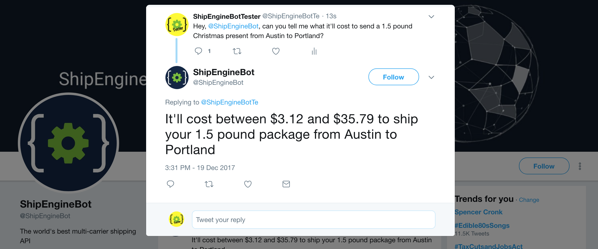
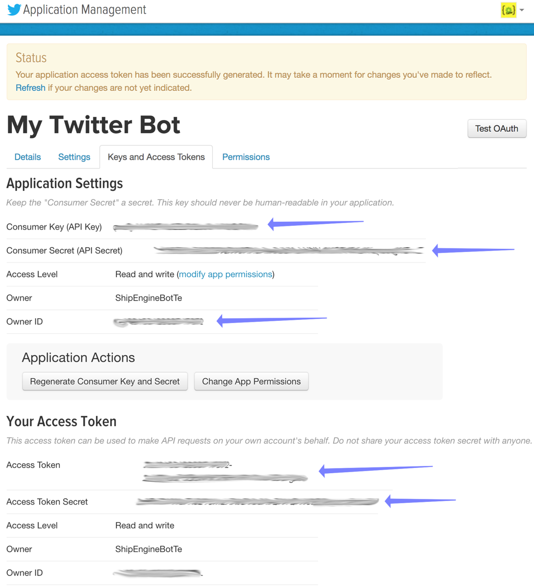
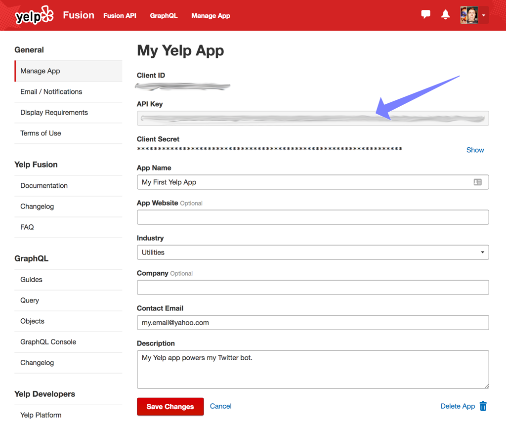
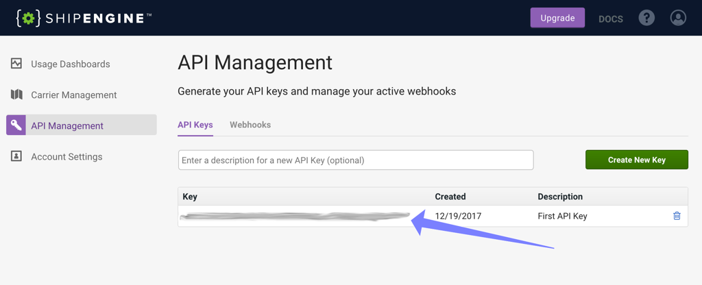
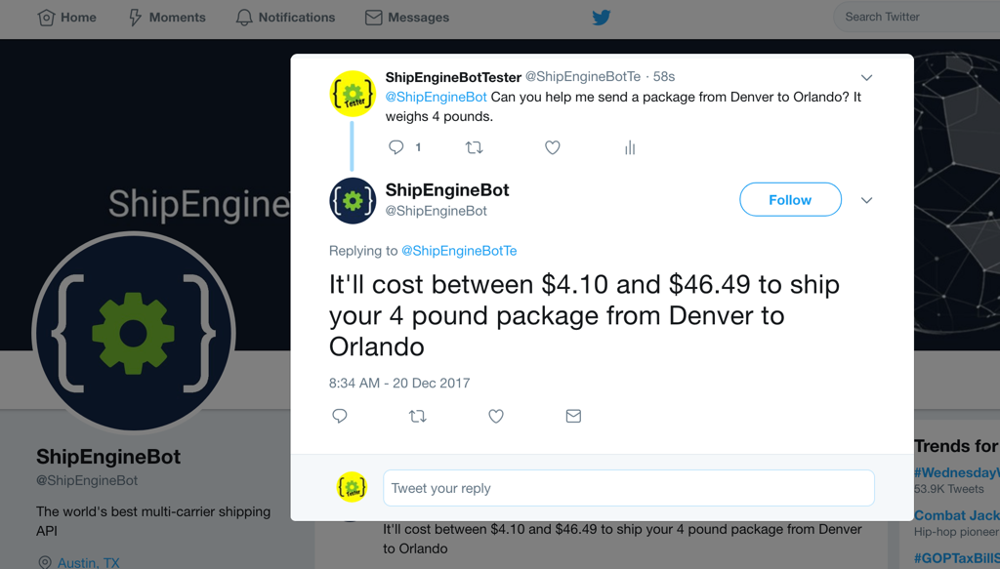

Build a natural language Twitter bot
using Node.js and the Yelp and ShipEngine APIs

At ShipEngine, we think our API is pretty fun and easy to use. But you know what's even more fun and easy to use? A Twitter bot. So we built @ShipEngineBot, which lets you ask shipping questions using natural language.
Hey @ShipEngineBot, I need to send 20 pounds of gummy bears from Austin to Portland. What'll that cost me?
@ShipEngineBot, How much does it cost to send a 4oz letter from New Jersey to Paris?
I wonder if @ShipEngineBot can help me ship 5kg of potato chips to 78702 from 90210
ShipEngineBot is happy to help you out whenever you need it. But how does it work? Under the hood, ShipEngineBot combines ShipEngine's shipping rates API, Yelp's business search API, and Twitter's stream API. I'll show you how it works, and how to build your own Twitter bot in less than an hour.
Step 1: Get your API keys
Each of the three APIs that we'll be using require you to create a free account, verify your email address, and generate an API key. Without these API keys, your bot won't be able to call the APIs. Don't worry, no credit card is required, since all three services offer a free usage tier.
For Twitter, you'll need to go to apps.twitter.com and create a new app. Then go to the "Keys and Access Tokens" tab and copy the "Consumer Key", "Consumer Secret", and "Owner ID" values for use later. You'll also need to click the "Create Access Token" button at the bottom of the page and then copy the "Access Token" and "Access Token Secret" values too.

Yelp
Similar to Twitter, you'll need to create a Yelp app. The process is a bit easier though. You only need to copy a single "API Key".

ShipEngine
Just click the "Get Started" button on the ShipEngine homepage to create your free account. After you confirm your email address, you can login to app.shipengine.com to access your dashboard. Click the "API Management" menu on the left to access your API keys (create one if necessary). Copy an API key so we can use it later in the code.

Step 2: Create the Twitter bot
You can build a Twitter bot in any language, but we're going to use Node.js for this article. So download and install Node if you don't already have it.
Note: Make sure you're running Node version 8 or newer. We're using some new syntax in this article that isn't supported by older versions. You can check your version of Node by running node --version in your terminal.
If you get stuck at any point during this article, or if you just want to see the finished product, then all of the code is available on GitHub.
Open a terminal window and run the following commands. This will create a new folder, setup a new Node.js project, and install all of the libraries that are needed for the Twitter bot. Lodash is a utility library, and the rest are SDKs for the three APIs that we're using.
mkdir twitter-bot
cd twitter-bot
npm init -y
npm install lodash twit yelp-fusion shipengine
You should now have a "twitter-bot" folder that contains a "package.json" file and a "node_modules" folder. Let's add a new file to that folder and start writing some code!
Create a new file named "twitter.js", open it up in your favorite code editor, and insert the following code. Be sure to replace each of the string constants with your Twitter app's keys from Step 1 above.
const Twitter = require("twit");
const account_id = "paste your Twitter Owner ID here";
const consumer_key = "paste your Twitter Consumer Key here";
const consumer_secret = "paste your Twitter Consumer Secret here";
const access_token = "paste your Twitter Access Token here";
const access_token_secret = "paste your Twitter Access Token Secret here";
// Connect to the Twitter Streaming API
let twitter = new Twitter({ consumer_key, consumer_secret, access_token, access_token_secret });
let stream = twitter.stream("user");
// Listen for incoming tweets
stream.on("tweet", handleTweet);
console.log("Waiting for somebody to tweet to us...");
This code connects to Twitter's streaming API and starts listening for incoming tweets. Whenever a tweet is received, the handleTweet function will be called. And here's what that function looks like (paste this code at the bottom of your "twitter.js" file):
/**
* Responds to tweets such as "How much to send a 3lb package from New York to London?"
* with responses like "It'll cost between $5.75 and $9.00 to send your 3lb package from New York to London".
*
* @param {object} tweet - A Twitter API tweet object (https://developer.twitter.com)
*/
async function handleTweet (tweet) {
// Ignore our own tweets
if (tweet.user.id_str === account_id) {
return;
}
try {
// Get the text of the tweet
let tweetText = tweet.extended_tweet ? tweet.extended_tweet.full_text : tweet.text;
console.log(`Received at tweet from @${tweet.user.screen_name}:`, tweetText);
// Build a response to the user
let response = `@${tweet.user.screen_name} ` + await buildResponse(tweetText);
console.log("Sending response:", response);
// Tweet the response as a reply to the original tweet
twitter.post("statuses/update", {
status: response,
in_reply_to_status_id: tweet.id_str,
});
}
catch (error) {
console.error(error);
}
}
The handleTweet function is called whenever there's any tweet involving your bot's Twitter account — including the bot's own tweets. That's why the first thing this function does is check the tweet's author ID against your bot's Twitter account ID (which you dutifully copied and pasted earlier) and exits unless the tweet is from someone else.
The next thing the code does is get the text of the tweet, which will be in the tweet.text property most unless the tweet contains more than the old limit of 140 characters. For longer tweets, you have to get the text from the tweet.extended_tweet.full_text property instead.
The next bit of code builds the response message by @mentioning the original tweeter and then appending the result of the buildResponse function. And where's that function? We'll create it next. Also note that this is an asynchronous function (denoted by the await keyword) since it will make calls to the Yelp and ShipEngine APIs as part of building the response.
Finally, after building the response message, we tweet it as a reply to the original tweet. This is done via the twitter.post method, which calls the POST statuses/udpate API endpoint.
Step 3: Natural language processing
Now we're going to create the buildResponse function that's called by handleTweet. This is where we'll do all of our natural language processing.
The buildResponse function will simply accept a string (the original tweet) and return a string (the response tweet), neither of which is specific to Twitter. In fact, from this point forward, none of the code is specific to Twitter, which means you could easily re-use this same code to build a Slack bot, a Facebook Messenger bot, or any other chatbot.
Since this code isn't Twitter-specific, let's create a new file named "buildResponse.js", rather than putting everything in one file. Add this line to the top of "twitter.js":
const buildResponse = require("./buildResponse");
Now paste the following code into "buildResponse.js":
/**
* Responds to a natural language message such as "How much to send a 3lb package from New York to London?"
* with something like "It'll cost between $5.75 and $9.00 to send your 3lb package from New York to London".
*
* @param {string} message - The message to respond to
* @returns {string} - The response message
*/
async function buildResponse (message) {
// Parse the message into from/to addresses and package weight.
let { from, to, weight, unit } = parseMessage(message);
// Ask for more info if anything is missing
if (!from || !to) {
return "I need to know where you're shipping from and to";
}
else if (!weight || !unit) {
return "I need to know the package weight and unit";
}
else {
// We have all the data we need! So get the shipping rates
let rates = await getRates(from, to, weight, unit);
if (rates.length === 0) {
return `Sorry, but I don't know how much it'll cost to ship your ${weight} ${unit} package from ${from} to ${to}`;
}
else {
let { minRate, maxRate } = getRateRange(rates);
return `It'll cost between ${minRate} and ${maxRate} to ship your ${weight} ${unit} package from ${from} to ${to}`;
}
}
}
module.exports = buildResponse;
As you can see, the buildResponse function calls several other functions, which we'll get to shortly. But first let's examine the high-level logic.
The first thing we do is parse the incoming message to extract the parts that we care about: the sender and recipient's location, the package weight, and the unit of weight. We then verify that all of these pieces of information were provided. If anything is missing, then we return a response message asking for the missing info.
If the message contains all the info we need, then we call a getRates function to retrive rate quotes from shipping carriers (USPS, FedEx, UPS, etc). If anything goes wrong, then no rates will be returned, in which case we respond with an apology message. If we do get rates back, then we return a message quoting the lowest and highest rates.
Now let's implement our our natural language parsing magic. Add the following code to your "badResponse.js" file:
/**
* Parses a natural language message such as "How much to send a 3lb package from New York to London?"
* and returns the locations ("New York" and "London") the weight (3) and the unit ("lb").
*
* @param {string} message - The message to be parsed
* @returns {{ from: ?string, to: ?string, weight: ?number, unit: ?string }}
*/
function parseMessage (message) {
let from, to, weight, unit;
// Parse "from XXX to YYYY"
let match = /from ([a-z0-9 ,-]+?) to ([a-z0-9 ,-]+)/i.exec(message);
if (match) {
from = match[1];
to = match[2];
}
// Parse "XX pounds", "X.XX ounces", "X gram", etc.
match = /(\d+(?:\.\d+)?) ?(lb|oz|g|kg|pound|ounce|gram|kilo)/i.exec(message);
if (match) {
weight = parseFloat(match[1]);
unit = match[2];
}
return { from, to, weight, unit };
}
As natural language processing goes, this is a very simplistic and somewhat naive implementation. But it works well enough for our simple Twitter bot. We use a regular expression to extract the sender and recipient location from phrases like "from New York to London", "from Dallas, TX to San Francisco, California", or even "from 78701 to 90210". Then we use another regular expression to extract the weight and unit in various formats, such as "5 pounds", "1.2oz", "20 kilos", etc. Notice that we convert the weight from a string to a number by calling parseFloat.
The parseMessage function returns an object containing from, to, weight, and unit. These properties will be undefined if they weren't found in the message. Recall that in the buildResponse function, we check for any missing values and return a message prompting the user for the missing pieces.
Next let's implement the getRateRange function. This function finds the lowest and highest rates and returns them as currency strings (e.g. "$5.75", "$0.45", "£50.00", etc). Add this code to your "badResponse.js" file:
/**
* Returns the min and max rates, as currency strings (e.g. "$5.75", "$0.45", etc.)
*
* @param {object[]} rates - An array of rate objects from ShipEngine
* @returns {{ minRate: string, maxRate: string }}
*/
function getRateRange (rates) {
// Get the min & max rates
let minRate = _.minBy(rates, "shipping_amount.amount").shipping_amount;
let maxRate = _.maxBy(rates, "shipping_amount.amount").shipping_amount;
// Format the rates as currency strings
minRate = minRate.amount.toLocaleString("en", { style: "currency", currency: minRate.currency });
maxRate = maxRate.amount.toLocaleString("en", { style: "currency", currency: maxRate.currency });
return { minRate, maxRate };
}
The rates array contains ShipEngine rate objects, which have shipping_amount.amount and shipping_amount.currency properties. We pass these properties to the Number.toLocaleString method to convert the numbers to human-friendly currency strings.
The getRateRange function also uses the _.minBy and _.maxBy functions from Lodash, so we need to import the library. Add this line to the top of the "buildResponse.js" file:
const _ = require("lodash");
Step 4: Get shipping rates
The only function that we haven't implemented yet in "buildResponse.js" is getRates. And, as you can probably guess, this is where we're going to call the Yelp and ShipEngine APIs to get the shipping rates that the user is asking for.
Lets implement the getRates function in a separate file so it encapsulates all of our third-party API logic. Create a "getRates.js" file and add the following code to it:
const _ = require("lodash");
const Yelp = require("yelp-fusion");
const ShipEngine = require("shipengine");
const yelpClient = Yelp.client("paste your Yelp API Key here");
const shipEngine = new ShipEngine.ShipEngine("paste your ShipEngine API Key here");
/**
* Returns an array of shipping rates from ShipEngine for the specified shipment criteria.
*
* @param {string} from - The package's starting location (e.g. "London", "Austin, Texas", "90210", etc.)
* @param {string} from - The destination location (e.g. "London", "Austin, Texas", "90210", etc.)
* @param {number} weightAmount - The package's weight, in whatever unit
* @param {string} unit - The unit of weight (e.g. "lb", "kg", "ounce", "pound", etc.)
*
* @returns {object[]} - Returns an array of rate objects from ShipEngine (https://docs.shipengine.com/docs)
*/
async function getRates (from, to, weightAmount, weightUnit) {
// Convert the addresses from strings to ShipEngine.Address objects
let ship_from = await normalizeAddress(from);
let ship_to = await normalizeAddress(to);
// Create a ShipEngine.Package object of the correct weight
let weight = normalizeWeight(weightAmount, weightUnit);
let parcel = new ShipEngine.Package(weight);
// Get the carriers that are configured for your ShipEngine account
let { carriers } = await shipEngine.getCarriers();
let carrier_ids = _.map(carriers, "carrier_id");
// Create a shipment with sender, recipient, and package
let shipment = new ShipEngine.Shipment({ ship_from, ship_to, packages: [parcel] });
// Let ShipEngine attempt to correct any invalid/missing parts of the address
shipment.validate_address = "validate_and_clean";
// Get shipping rates for this shipment from these carriers
let { rate_response } = await shipEngine.getRates(shipment, { carrier_ids });
if (rate_response.rates.length > 0) {
return rate_response.rates;
}
else {
// No rates were returned, so fallback to "invalid_rates". These rates are for services
// that aren't configured for your account (e.g. international, freight, etc.)
return rate_response.invalid_rates;
}
}
module.exports = getRates;
Okay, there's a lot going on here, so let's go through it.
We start off by creating instances of the Yelp and ShipEngine API clients. In both cases, we provide the client with our API key. Remember to replace the "paste your ..." strings with the API keys that we created back in Step 1.
Next we define the getRates function, which accepts the from, to, weightAmount, and weightUnit values that we previously got from the parseMessage function and uses those values to calculate the shipping rates.
The getRates function starts-off by converting the from and to locations from strings (e.g. "Dallas, Texas") to ShipEngine address objects. We then convert the weightAmount and weightUnit to a ShipEngine weight object and use that to create a ShipEngine package object.
Next we need to get the list of carriers that are configured for your ShipEngine account. Your account is already configured with USPS by default, but you can add other carriers on your account dashboard. The shipEngine.getCarriers function returns an array of carrier objects, and we use _.map to extract the carrier IDs.
We then create a shipment object using the sender and recipient addresses and package information and use the shipment along with the carrier IDs to call shipEngine.getRates. This is the goal we've been working toward this whole time. We get back an array of rate objects, which we return. In some cases, we'll get back invalid_rates instead of rates, but that just means the rates are for services that aren't configured for your account (such as international shipments, freight, etc.), so we return those anyway.
So now let's implement the normalizeAddress function that we mentioned earlier. It's job is to convert a string location (e.g. "New York", "Dallas, Texas", or "90210") to an address object. We could try to parse the location strings ourselves, but that's much more difficult than it sounds. So instead we rely on the Yelp business search API to do the work for us.
Add this code to "getRates.js":
/**
* Converts a string location to a ShipEngine.Address object using the Yelp API.
*
* @param {string} location - The human-friendly location (e.g. "New York", "Austin, Texas", "90210")
* @returns {ShipEngine.Address}
*/
async function normalizeAddress (location) {
// Search Yelp for the business that best matches the location
let response = await yelpClient.search({ location, limit: 1 });
let business = response.jsonBody.businesses[0] || { location: {} };
return new ShipEngine.Address(
business.name || "",
business.location.city || "",
business.location.state || "",
business.location.zip_code || "",
business.location.country || "",
business.location.address1 || "",
business.location.address2 || "",
business.phone || ""
);
}
The yelpClient.search function is very forgiving and will almost always be able to find a reasonably close match. But occasionally it fails to find anything, or the address it finds is incomplete, in which case we default to empty strings for each field.
Note: Because we rely on the Yelp API to parse addresses, our bot won't work for countries in which Yelp does not operate. It works great for the U.S. and the U.K. though!
We just hae one more small function to implement before our Twitter bot is complete. Add the following code for the normalizeWeight function to "getRates.js":
/**
* Converts a weight and unit into the format that's required by ShipEngine.
*
* @param {number} value - The weight amount, in whatever unit
* @param {string} unit - The weight unit or abbreviation (e.g. "pound", "lb", "kilogram", "kg", etc.)
*/
function normalizeWeight (value, unit) {
switch (unit.toLowerCase()) {
case "oz":
unit = "ounce";
break;
case "lb":
unit = "pound";
break;
case "g":
unit = "gram";
break;
case "kg":
case "kilo":
unit = "kilogram";
break;
}
return { value, unit };
}
This one's pretty straightforward. It just converts unit abbreviations to their canonical form and returns the weight in the structure that's expected by ShipEngine.
Step 5: Test it out!
If you've followed along to this point, then you now have a working Twitter bot! Just open a terminal window in your project directory and run node twitter.js to start it up. If you get any errors or you suspect that something's not right, then feel free to compare your code to the code on GitHub.
When the bot first starts, you should see this message:
node twitter.js
Waiting for somebody to tweet to us...
Your bot is now listening for tweets. So head over to Twitter and use a different account to tweet a message to your bot. Here's one to try...
@YOUR_BOT_NAME_HERE Can you help me send a package from Denver to Orlando? It weighs 4 pounds.
Each time you send a tweet to your bot, you will see the message and its response in the terminal. If an error occurs, you'll see that in the terminal too.
Received at tweet from @YOUR_ACCOUNT: @YOUR_BOT_NAME_HERE Can you help me send a package from Denver to Orlando? It weighs 4 pounds.
Sending response: @YOUR_ACCOUNT It'll cost between $4.10 and $46.49 to ship your 4 pound package from Denver to Orlando
And, of course, you'll also see the response on Twitter

That's it! You've created a natural language Twitter bot. Now start experimenting with ways to enhance it to support different phrases. Or port it to Slack or Facebook Messenger.